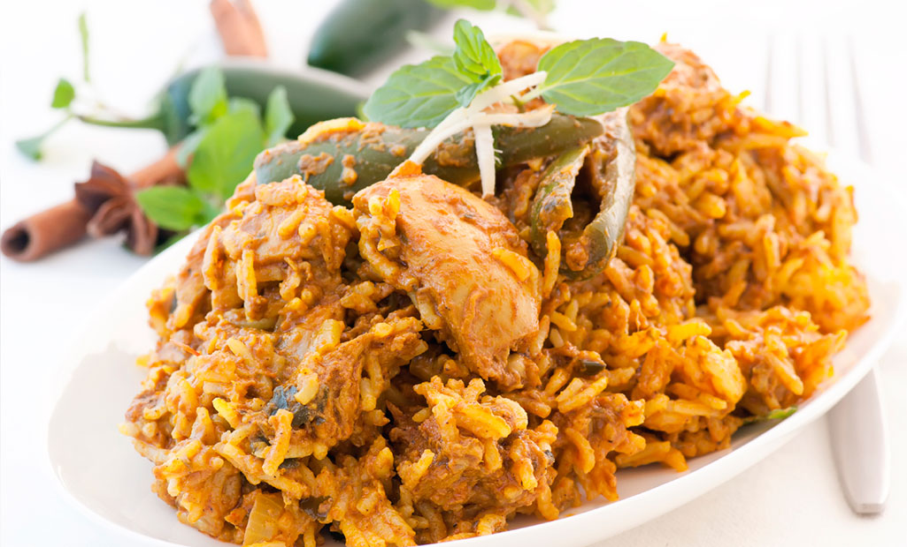

Top 10 Famous Dishes of Delhi
Paranthas
From
being the perfect start to a “healthy” morning in most Delhi
households, to a meal for hungry college students and even a late-night
snack, paranthas are definitely on the top of the list when it comes to
my favorite food in Delhi. Choose from a plain one or select a stuffing
of your choice - potatoes, cauliflower, radish, eggs, keema, bananas or
even last night’s left over dal - the options are galore.
Where can
I try this dish? Paranthe Wali Gali in Chandni Chowk, whose past
customers include the likes of Maharajah of Kashmir and even Prime
Minister Nehru and his family; Moolchand Parathe Wala located in South
Delhi was SRK’s favorite when he used to live in Delhi

Chaat
If
there is one thing that keeps the Delhi food scene ticking it’s the
Street Food. With a variety that is unmatched, eating on the streets of
Delhi is a crash course in the history and culture of the place.
Chandni Chowk is undoubtedly the Street Food Capital of Delhi, and
while no guide book can actually pinpoint the best places for Chaat,
there are some landmark food haunts that really stand out. Of course,
if you aren’t willing to travel that far, fret not for there are plenty
of options for street food in Delhi.
Where can I try the dish? UPSC
building, Shahjahan Road; Bittu Tikki Wala, Karol Bagh; Daulat ki
Chaat, Chandni Chowk; Natraj Dahi Bhalle Wala, Chandni Chowk.\

Butter Chicken
Here’s
an interesting story about the origin of one of the most gratifying
dishes on this planet. It originated in the 1950s in Moti Mahal
Restaurant, Daryaganj, a neighbourhood skirting the Walled City. Known
for its Tandoori Chicken, the cooks there accidentally tossed the sauce
consisting of butter, tomato and chicken juices with tandoori chicken
pieces; the rest is history. Today, this dish can be found in almost
every non-vegetarian restaurant and highway dhabas and is best enjoyed
with rice or naan.
Where can I try this dish? Moti Mahal, Daryaganj; Havemore, Pandara Road.
Kebabs
Whoever
thought grilled chunks of meat or fish marinated in aromatic Indian
spices couldn’t give you joy should think again. While we Delhiites
have a lot to be thankful for to the Mughals, Kebabs are one of them.
Whether it is Kebabs being delivered to your car, a quintessentially
Delhi experience, to food stalls and fine dining restaurants across the
city, try this popular dish and you will be hooked forever.
Where
can I try this dish? Alkakori Alkauser, R K Puram; Ustad Moinuddin
Kebabs, Lal Kuan; Ghalib Kebab Corner, Nizamuddin; Salim’s Kebabs, Khan
Market; Aap Ki Khatir, SDA

Chole Bhature
Here’s
a piece of advice: This dish is best enjoyed on an empty stomach. Rich,
spicy and heavy, this is one of the most popular Punjabi dishes and is
definitely on my list of top 10 must-try dishes in Delhi. Don’t be
surprised if you find it on the breakfast menu of restaurants across
the capital. You can find this lip smacking dish at all food joints, be
it local joints or restaurants, given its popularity with delhiites. It
is generally accompanied with Lassi.
Where can I try this dish? Sitaram Diwan Chand, Paharganj; Chache Di Hatti Kamla Nagar

Biryani
A
favourite of the Mughal Emperors, the Biryani has stood the test of
time and is today enjoyed all over India. This poultry or meat based
dish is prepared in an earthen pot and the lid is sealed with dough so
that the spices, flavours and aromas are soaked in. The Biryani
experiences in Delhi vary from the commercial chains and road side
dhabas, to the Sufi shrines and five-star hotels.
Where can I try this dish? Dum Pukht in ITC Maurya; Al Kakori Al Kauser, R K Puram, Deez Biryani & Kebabs, Defence Colony.

Nihari
As
you enter Old Delhi and walk into the serpentine lanes, you can’t help
but be drawn to the aroma of one of the region’s signature delicacies,
the Nihari. This rich, spicy broth of slow cooked meat is served
alongside hot tandoori rotis or preferably khameeri rotis. The dish was
a favourite within the royal families, who used to feast on it in the
mornings. Today it serves as the ideal nourishment for labourers,
rickshaw pullers, coolies and many others looking to kick start their
day.
Where can I try this dish? Bara Hindu Rao area; Karim’s near Jama Masjid.
Rolls
Ok,
so we aren’t going to take the credit away from Kolkata, where the
original Kathi roll recipe was developed, but Delhi has its own
delicious variants. From street stalls offering a variety of rolls, to
supermarkets stocking up on frozen options and even the posh Delhi
restaurants, Kathi rolls are a befitting food option for busy Delhiites
on the go.
Where can I try this dish? Nizam’s, Connaught Place; Khan Chacha, Khan Market; Qureshi’s Kabab Corner, South Extension-II

Momos
This
one bags the prize for being one of the most popular snacks, be it in
office complexes, birthdays or even cocktail parties. It is not
uncommon to find vendors outside almost every office building, housing
area and market place selling Momos. These tasty dumplings are
available in both vegetarian and non-vegetarian options and are enjoyed
with the fiery-red sauce.
Where can I try this dish? Kamla Nagar
Market; Nagaland Food Stall in Dilli Haat; Sikkim House,
Panchsheel Marg; Cafe Brown Sugar, GK market; Yashwant Complex,
Chanakya Puri, Majnu ka Tilla, North Campus.

Desserts
You
are probably familiar with this line used across all Delhi households
“Khaane ke baad kuch meetha ho jaye” (“Let’s eat something sweet after
a meal”). With the extensive variety of desserts offered in the
capital, it is hard to say no. From the piping-hot Jalebis and
lip-smacking Rabri Falooda, to innovative Kulfis in flavours like
Custard Apple, Tamarind and Aam Papad, the delicious Motichoor Ladoo
made from pure desi ghee and Blueberry Cheesecake; Delhi sure loves its
sweets!
Where can I try this dish? Giani di Hatti, Chandni Chowk;
Old and Famous Jalebiwala in Chandni Chowk who has served celebrities
like Late Raj Kapoor and Indira Gandhi; Kuremal Mohan Lal Kulfiwala,
Chandni Chowk; Big Chill Cafe, Khan Market; Ghantewala Halwai, Chandni
Chowk
Now that you know my list of top 10 famous dishes of Delhi, it
is time to head out and satiate your taste buds. Don’t forget to write
back with your favourite place.